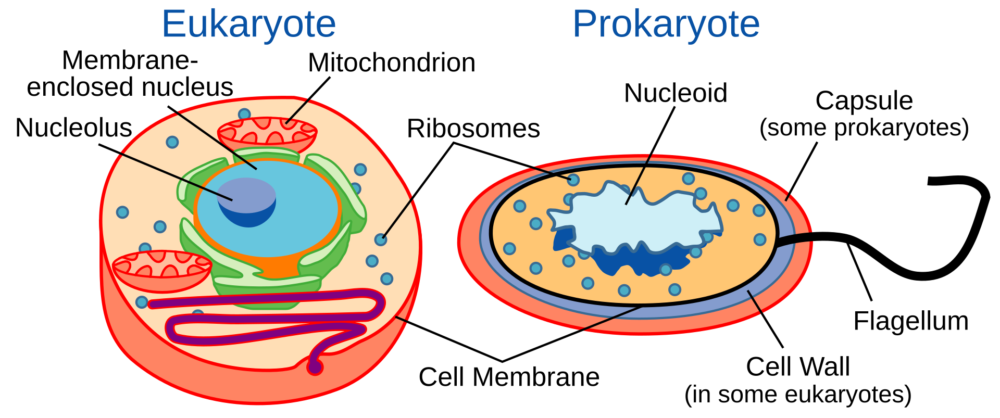

Unit 1 - Introduction and the Biochemistry of Life
By Alejandro Avella
August 3, 2024
Introduction and the Biochemistry of Life Overview
Videos with Professor Lander
In a series of videos, Professor Lander will
- provide an overview of the course,
- provide a review of basic biochemical principles,
- and provide an introduction to three types of macromolecules common to all cells: lipids, phospholipids, and carbohydrates.
Deep Dive Videos
In a series of short tutorials, Robert will
- explain how to interpret chemical structures,
- teach you how to determine whether a molecule is hydrophobic or hydrophilic,
- and provide the tools to identify the types of bonds and forces that occur between molecules (no Wikipedia page).
Practice Assessments
It is important to try to apply what you know with new examples, contexts, or scenarios when learning. We strongly recommend that you complete all practice assessments. Try until you get the question right. Look for more explanation with the show answer button.
- concept questions following each video (Test Yourself questions)
Introduction and the Biochemistry of Life
Goals
- Understand the basic components and forces found in biological macromolecules.
- Understand that, despite their different levels of organization, all organisms are comprised of cells, the basic unit of life.
- Recognize that a cell and its various sub-cellular structures are comprised of four major classes of macromolecules: carbohydrates, lipids, proteins, and nucleic acids.
Protein Myoglobin
Nucleic acids RNA (left) and DNA (right).
- Understand the general structure of lipids and phospholipids and how this structure dictates function.
- Understand the general structure of simple and complex carbohydrate molecules and how this structure dictates function.
- Understand the general structure of ATP.

Adenosine triphosphate (ATP)
Objectives
At the end of this learning sequence, you should be able to...
Model of hydrogen bonds (1) between molecules of water
Schematic of size-based membrane exclusion
- Explain why ATP is a high-energy molecule that powers cellular work.